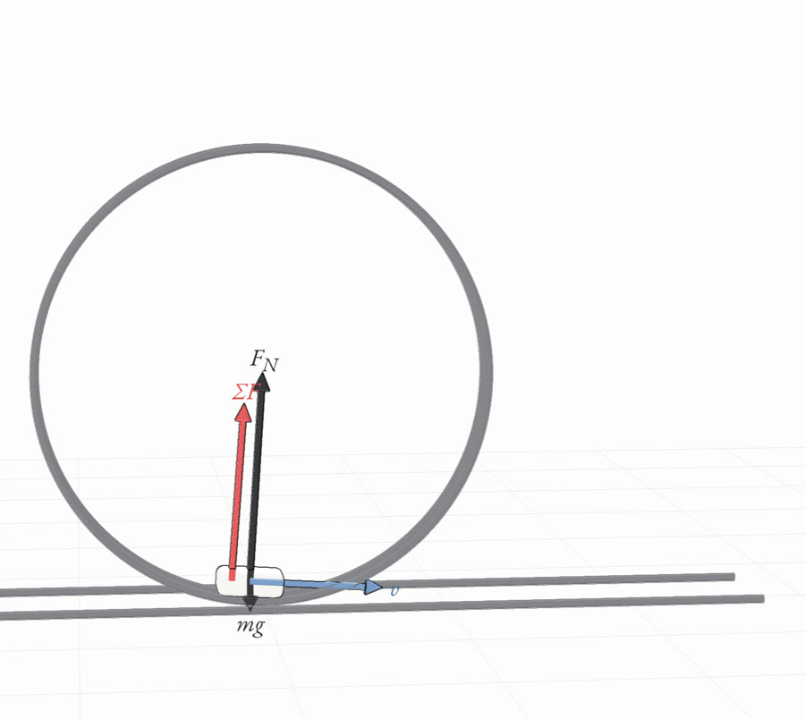
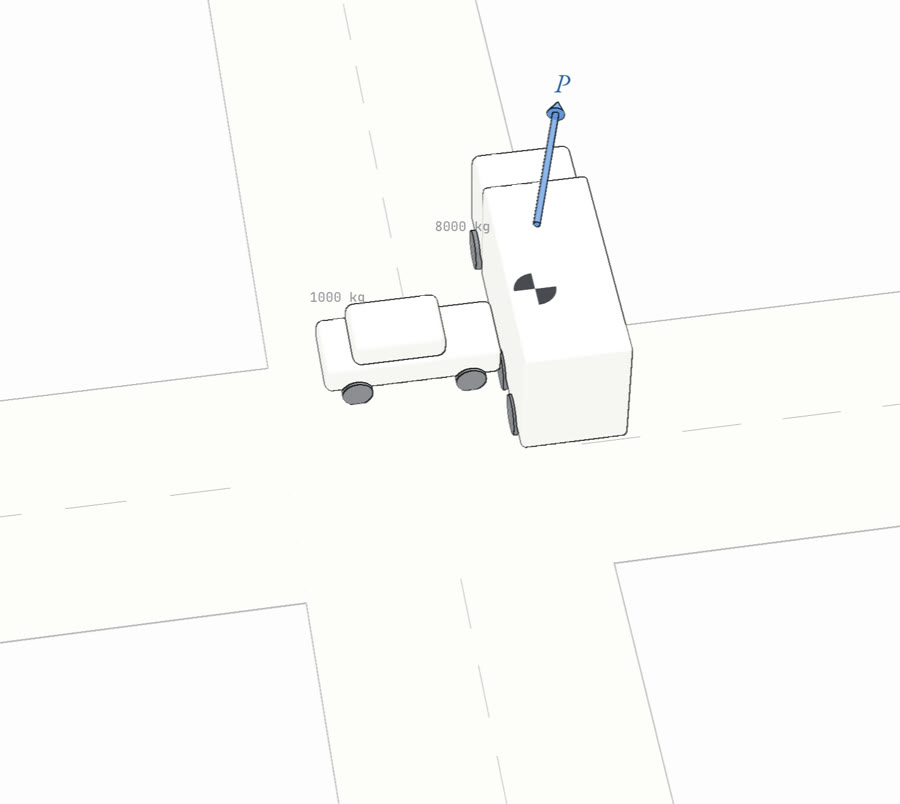

No. 0111 pages
Kinematics
motion, frames and calculus
No. 0213 pages
Newton’s laws
what changes motion
No. 0313 pages
Circular motion
circles, ellipses, escape
No. 0412 pages
Work and energy
from work to well
No. 0512 pages
Momentum
mass in motion
No. 0612 pages
Oscillations
back and forth, and back again
No. 0715 pages
Rotation
turning, torque, angular momentum
No. 089 pages
Fluids
pressure, buoyancy and flow